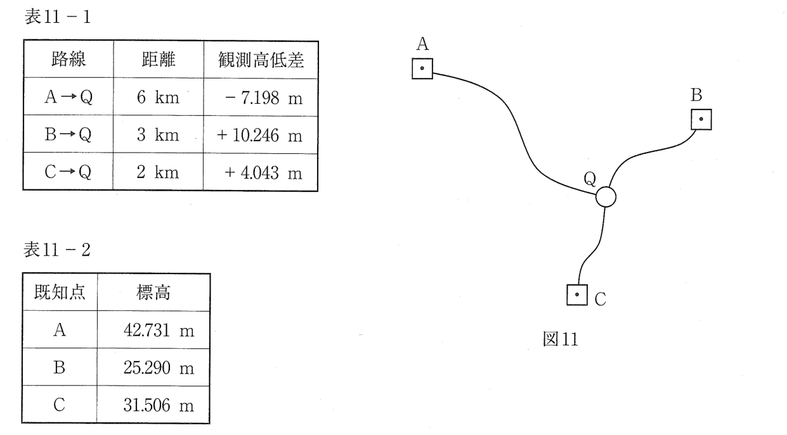
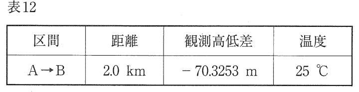
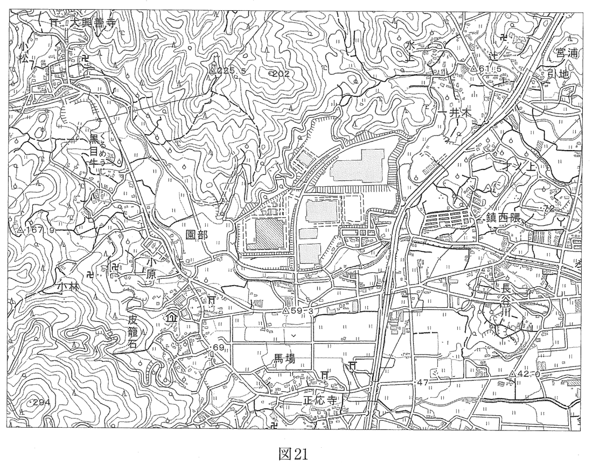
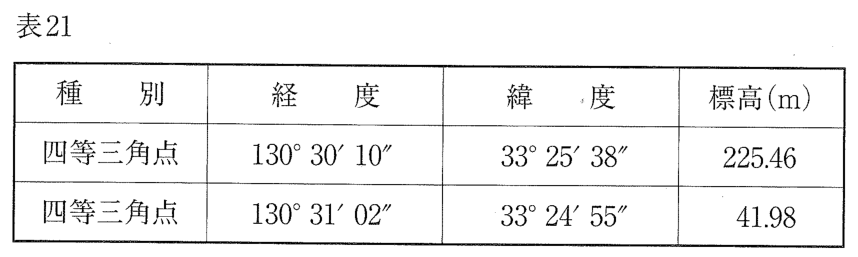
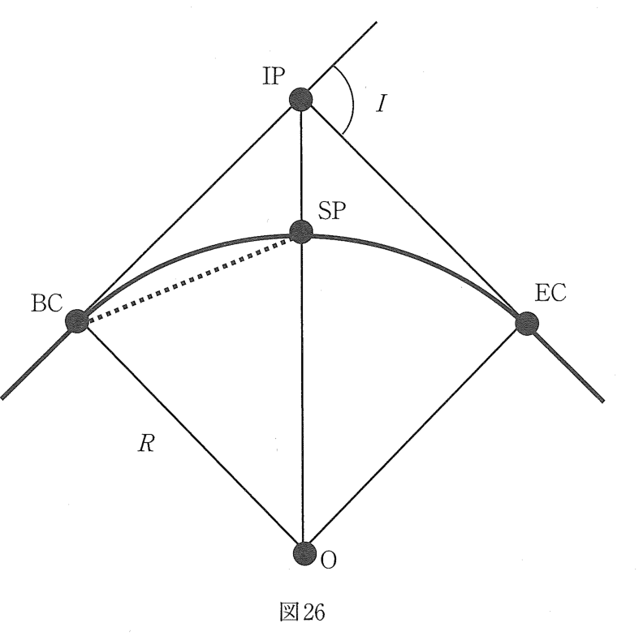
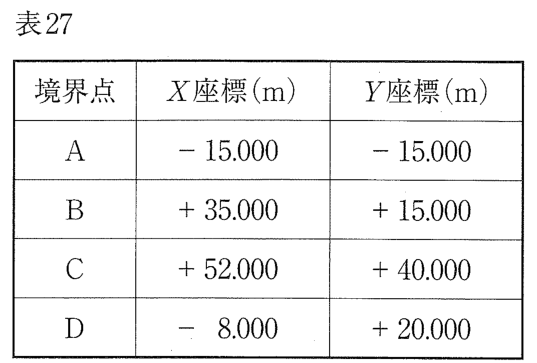

平成27年度（H27）計算問題
測量士補試験の計算問題 10 問。紙と鉛筆で解いてから「答えと解説」を開いてください。関数の値は試験の巻末の関数表を使います。
No.6多角
平面直角座標系上において，点Pは，点Aから方向角が230°00′00″，平面距離が1,000.00 mの位置にある。点Aの座標値を，X＝－100.00 m，Y＝－500.00 mとする場合，点Pの座標値は幾らか。最も近いものを次の中から選べ。
なお，関数の数値が必要な場合は，巻末の関数表を使用すること。
- X＝－1,266.04 m，Y＝－742.79 m
- X＝－866.04 m，Y＝－1,142.79 m
- X＝－742.79 m，Y＝－1,266.04 m
- X＝－666.04 m，Y＝－142.79 m
- X＝－642.79 m，Y＝－766.04 m
答えと解説
答え 3
方向角は、北（X）から右回りに測った角です。230° は真南（180°）から 50° 回りすぎた向き、つまり南から西（左）へ 50° 傾いた左下向きです。だから X も Y も減ります（−）。
X の変化 ＝ −1,000 × cos 50° ＝ −1,000 × 0.64279 ＝ −642.79 m
Y の変化 ＝ −1,000 × sin 50° ＝ −1,000 × 0.76604 ＝ −766.04 m
YP ＝ −500.00 − 766.04 ＝ −1,266.04 m
No.11水準
図11に示すように，既知点A，B，Cから新点Qの標高を求めるために水準測量を実施し，表11－1の結果を得た。新点Qの標高の最確値は幾らか。最も近いものを次の中から選べ。
ただし，既知点の標高は表11－2のとおりとする。

- 35.537 m
- 35.539 m
- 35.540 m
- 35.542 m
- 35.545 m
答えと解説
答え 4
3 つの既知点（標高が分かっている点）から、それぞれ Q の標高を出します。高低差は「矢印の先が、矢印の元より何 m 高いか」なので、既知点の標高に、符号を付けたまま足します。
B から 25.290 ＋ 10.246 ＝ 35.536 m
C から 31.506 ＋ 4.043 ＝ 35.549 m
水準測量は距離が短いほど正確なので、重さ（どれくらい信用するか）を距離に反比例させて平均します。
35.533 m より上の分だけ（mm で）平均すると、0、3、16 なので
最確値 ＝ 35.533 ＋ 0.009 ＝ 35.542 m
No.12水準
公共測量により，水準点Aから新点Bまでの間で1級水準測量を実施し，表12の結果を得た。標尺補正を行った後の水準点A，新点B間の観測高低差は幾らか。最も近いものを次の中から選べ。
ただし，観測に使用した標尺の標尺改正数は20 ℃において＋4 μm/m，膨張係数は＋1.2×10⁻⁶/℃とする。

- －70.3264 m
- －70.3260 m
- －70.3257 m
- －70.3252 m
- －70.3246 m
答えと解説
答え 2
標尺（高さを読む物差し）の目盛りには、わずかな狂いがあります。標尺改正数は 1 m あたりの狂いを直す量（20 ℃ のとき）、膨張係数は温度 1 ℃ で 1 m あたりどれだけ伸びるかです。10⁻⁶ は 100 万分の 1 なので、1.2 × 10⁻⁶ は 1 m あたり 1.2 μm になります（1 μm ＝ 0.000001 m）。
1 m あたりの補正 ＝ ＋4 ＋ 1.2 × 5 ＝ 4 ＋ 6 ＝ ＋10 μm
高低差 70.3253 m 分 ＝ 10 × 70.3253 ≒ 703 μm ≒ 0.0007 m
補正が＋なので、高低差の大きさが 0.0007 m 増えます。B は A より低く、高低差はマイナスなので、マイナスの側に大きくなります。
標尺で読んだのは高さなので、掛けるのは高低差の 70.3253 m。距離の 2.0 km は使いません。
No.14地形
細部測量において，基準点Aにトータルステーションを整置し，点Bを観測したときに2′30″の方向誤差があった場合，点Bの水平位置の誤差は幾らか。最も近いものを次の中から選べ。
ただし，点A，B間の水平距離は92 m，角度1ラジアンは2″×10⁵とする。
- 46 mm
- 50 mm
- 54 mm
- 61 mm
- 69 mm
答えと解説
答え 5
1 ラジアンは、弧の長さが半径と同じになる角です。なので「半径 × 角（ラジアン）＝ 弧の長さ」で、小さな角なら弧の長さがそのまま B の位置のずれです。
150″ をラジアンに直す 150 ÷ (2 × 10⁵) ＝ 150 ÷ 200,000 ＝ 0.00075
No.15地形
トータルステーション（以下「TS」という。）を用いた縮尺1/1,000の地形図作成において，標高138 mの基準点から，ある道路上の点Aの観測を行ったところ，高低角－30°，斜距離48 mの結果が得られた。その後，点AにTSを設置し，点Aと同じ道路上にある点Bを観測したところ，点Bの標高102 m，点A，B間の水平距離144 mの結果が得られた。
このとき，点Aと点Bを結ぶ道路とこれを横断する標高110 mの等高線との交点は，この地形図上で点Bから何cmの地点か。最も近いものを次の中から選べ。
ただし，点Aと点Bを結ぶ道路は直線で傾斜は一定であるとする。
なお，関数の数値が必要な場合は，巻末の関数表を使用すること。
- 3.2 cm
- 4.8 cm
- 6.4 cm
- 8.0 cm
- 9.6 cm
答えと解説
答え 5
まず A の標高。基準点から高低角 −30°（下向き）に斜距離 48 m なので、下がった高さは 48 × sin 30°。
A の標高 ＝ 138 − 24 ＝ 114 m
A と B を結ぶ道路は傾きが一定なので、水平距離は標高の差に比例します。B から 110 m の等高線までの標高差と、B から A までの標高差の比を使います。
＝ 144 × 8 ÷ 12 ＝ 96 m
縮尺 1/1,000 では、実際の 1 m が地図上の 1 mm なので、96 m は 96 mm ＝ 9.6 cm。
No.17写真
画面距離12 cm，画面の大きさ14,000画素×7,500画素，撮像面での素子寸法10 μmのデジタル航空カメラを用いて，数値空中写真の撮影計画を作成した。撮影基準面での地上画素寸法を20 cmとした場合，撮影高度は幾らか。最も近いものを次の中から選べ。
ただし，撮影基準面の標高は0 mとする。
- 600 m
- 1,600 m
- 2,000 m
- 2,400 m
- 2,800 m
答えと解説
答え 4
地上画素寸法は、写真の 1 画素に写る地面の長さです。図の 2 つの三角形（レンズの上と下）は相似なので、「素子の大きさ ： 画面距離 ＝ 地上の大きさ ： 撮影高度 H」です。画面距離は、レンズから撮像面までの長さ。単位を m にそろえます。
H ＝ 0.12 × 0.2 ÷ 0.00001 ＝ 0.024 ÷ 0.00001 ＝ 2,400 m
撮影基準面の標高は 0 m なので、これがそのまま撮影高度です。
No.18写真
画面距離10 cm，撮像面での素子寸法12 μmのデジタル航空カメラを用いて，海面からの撮影高度2,500 mで，標高500 m程度の高原の鉛直空中写真の撮影を行った。この写真に写っている橋の長さを数値空中写真上で計測すると1,000画素であった。
この橋の実長は幾らか。最も近いものを次の中から選べ。
ただし，この橋は標高500 mの地点に水平に架けられており，写真の短辺に平行に写っているものとする。
- 180 m
- 240 m
- 300 m
- 360 m
- 420 m
答えと解説
答え 2
写真の縮尺は「画面距離 ÷ 写したものからカメラまでの高さ」です。橋は標高 500 m にあるので、高さは 2,500 − 500 ＝ 2,000 m。
実際の長さ L ＝ 12 mm × 2,000 m ÷ 100 mm ＝ 12 × 2,000 ÷ 100 ＝ 240 m
No.21地図
図21は，国土地理院刊行の電子地形図25000の一部（縮尺を変更，一部を改変）である。この図内に示す老人ホームの経緯度は幾らか。最も近いものを次の中から選べ。
ただし，表21に示す数値は，図内の三角点のうち2点の経緯度及び標高を表す。


図の出典：国土地理院「電子地形図25000」（測量士補試験の問題に掲載されたもの）
- 東経130°29′55″ 北緯33°25′05″
- 東経130°29′57″ 北緯33°25′16″
- 東経130°30′03″ 北緯33°25′03″
- 東経130°30′17″ 北緯33°24′47″
- 東経130°31′10″ 北緯33°25′17″
答えと解説
答え 3
図 21 の中から地図記号を探します。三角点は三角形の中に点、老人ホームは家の中に杖の形です。三角点は図の中に何か所かあるので、横に書かれた標高が表 21 の 225.46 m と 41.98 m に合うもの（225.5 と 42.0）を選びます。図の右へ行くほど経度が大きく、下へ行くほど緯度が小さくなります。
緯度の差 25′38″ − 24′55″ ＝ 43″ （図の上で縦 71.4 mm）
老人ホームは、三角点①から西へ 9.6 mm、南へ 58.3 mm です。
緯度 43″ × 58.3 ÷ 71.4 ≒ 35″ → 25′38″ − 35″ ＝ 25′03″
最も近いのは、東経 130°30′03″、北緯 33°25′03″（選択肢 3）です。
図の出典：国土地理院「電子地形図25000」（測量士補試験の問題に掲載されたもの）。赤・青の線と文字は当サイトが書き足しました
No.26応用
図26のように，円曲線始点BC，円曲線終点ECからなる円曲線の道路の建設を計画している。
曲線半径R＝100 m，交角I＝108°としたとき，建設する道路の円曲線始点BCから曲線の中点SPまでの弦長は幾らか。最も近いものを次の中から選べ。
なお，関数の数値が必要な場合は，巻末の関数表を使用すること。

- 45.40 m
- 75.00 m
- 90.80 m
- 99.40 m
- 161.80 m
答えと解説
答え 3
接線と半径は直角に交わるので、円曲線の中心角（O から見た BC と EC の間の角）は交角 I と同じ大きさです。SP は円曲線の真ん中なので、O から見た BC と SP の間の角はその半分になります。
O から見た BC と SP の間の角 ＝ 108° ÷ 2 ＝ 54°
弦は、BC と SP をまっすぐ結んだ長さです。O から BC までも SP までも半径 100 m なので、三角形は二等辺三角形。O から弦に垂線を下ろすと、27° の直角三角形が 2 つできます。
弦長 ＝ 2 × 45.399 ≒ 90.80 m
No.27応用
境界点A，B，C，Dを結ぶ直線で囲まれた四角形の土地の測量を行い，表27に示す平面直角座標系の座標値を得た。この土地の面積は幾らか。次の中から選べ。
なお，関数の数値が必要な場合は，巻末の関数表を使用すること。

- 1,250 m²
- 1,350 m²
- 2,500 m²
- 2,700 m²
- 2,750 m²
答えと解説
答え 2
座標から面積を出す方法（座標法）を使います。形は動かしても変わらないので、先に A を原点に移す（全部の X に 15、Y に 15 を足す）と数字が小さくなります。
B (35 ＋ 15, 15 ＋ 15) ＝ (50, 30)
C (52 ＋ 15, 40 ＋ 15) ＝ (67, 55)
D (−8 ＋ 15, 20 ＋ 15) ＝ (7, 35)
A→B→C→D の順に、「X ×（次の点の Y − 前の点の Y）」を足すと、面積の 2 倍です。
B 50 × (55 − 0) ＝ 2,750
C 67 × (35 − 30) ＝ 335
D 7 × (0 − 55) ＝ −385
合計 ＝ 2,750 ＋ 335 − 385 ＝ 2,700
面積 ＝ 2,700 ÷ 2 ＝ 1,350 m²